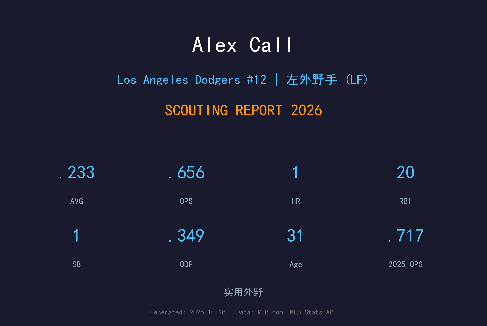
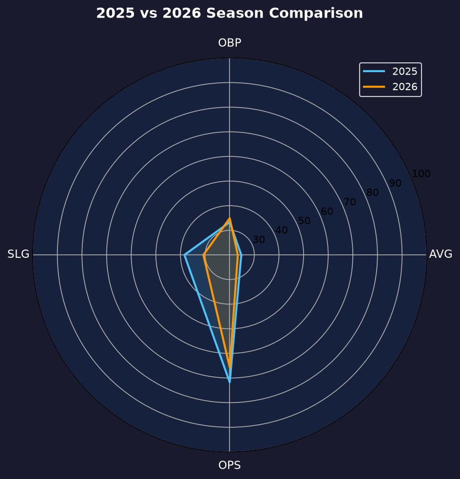
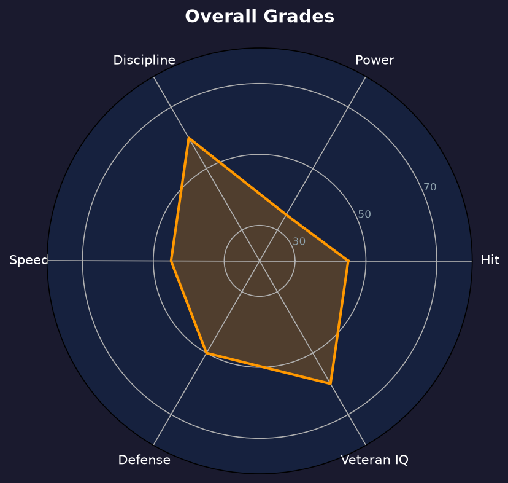

Los Angeles Dodgers | 外野手（LF/CF） | 右投 / 右打 | 老将外野深度

Alex Call 是2026年道奇外野的深度老将，用 88 场出赛证明了自己"随时可用"的职业价值。他的 .233/.349/.307 成绩单看似平淡，但 .349 的上垒率在替补球员中极为难得。
Call 的生存法则是"不挥坏球"：23 次保送加 7 次触身球，让他的上垒率高达 .349，而 35 次三振在 195 打席中并不夸张。他缺乏长打（整季仅 1 轰），但能把打席拉长、消耗投手，是老将智慧的体现。
31岁的 Call 已经进入生涯后期，他的角色定位清晰：第四/第五外野、代打、伤病保险。在道奇这个争冠球队里，这种"零抱怨、随时准备好"的老将是无价之宝。
在经历白袜农场多年磨练后，于华盛顿国民登上大联盟。
88 场出赛、.349 上垒率，成为外野伤病潮中最可靠的补丁。

| 赛季 | G | AVG | OBP | SLG | OPS | HR | RBI |
|---|---|---|---|---|---|---|---|
| 2025 | 38 | .247 | .333 | .384 | .717 | 2 | 5 |
| 2026（道奇） | 88 | .233 | .349 | .307 | .656 | 1 | 20 |
出赛数翻倍、角色转为纯替补后，长打率大幅下滑，但上垒率反升至 .349——完全转向"上垒型"打法。
替补球员最怕的是"久疏战阵后手感全失"，Call 用稳定的选球机制规避了这个问题——即使一个月只首发几次，他的 pitch recognition 不会生锈。23 保送 + 7 触身在 195 打席中制造了 15.4% 的上垒贡献，这在替补球员中是精英水准。
2025 年 36.5 打数/轰、SLG .384；2026 年 163 打数仅 1 轰、SLG .307。31 岁的他力量明显衰退，Or 这或许与教练组要求他"缩棒保 contact"的战术定位有关。无论原因如何，他已彻底转型为"上垒机器"型替补。
当道奇外野遭遇伤病潮时，Call 的 88 场出赛是球队能保持竞争力的隐形功臣。他的价值无法用 WAR 衡量——每一次代打保送上垒、每一次消耗投手的 8 球打席，都是争冠球队需要的"小胜利"。

上垒型老将外野，争冠球队的完美拼图
B- 级 / 替补老将
Alex Call 的2027赛季将延续"老将外野保险"的角色定位。在道奇外野新秀辈出的环境下，他需要依靠经验与选球维持 roster 位置。
2026：88 场 .349 OBP 的外野深度年
2027：目标维持第四外野定位、继续提供老将价值
2028+：可能转型教练或小球会老将角色
Alex Call 出生于内布拉斯加州 Omaha，在 Ball State 大学打出名堂后，2016 年 MLB 选秀第 3 轮被芝加哥白袜选中。他在白袜农场系统磨练多年，2021 年 12 月被交易至华盛顿国民，2022 年登上大联盟。
在国民的几年里，Call 始终是"可靠但不耀眼"的类型——能守多个位置、能上垒、能消耗投手，但缺乏改变比赛的一击。2026 年他加盟洛杉矶道奇，在争冠球队中找到了最适合自己的角色：不需要每天首发，但每次被叫到名字时都能做出贡献。
场外的 Call 以职业态度著称，队友们评价他是"教练组最信任的替补"。在道奇星光熠熠的更衣室里，这种低调可靠的品质反而显得更加珍贵。